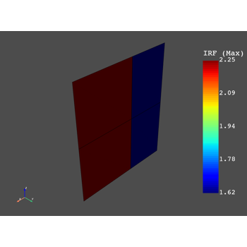

Examples#
These examples demonstrate the behavior and usage of pyDPF-composites.

Basic example of setting up a composite failure workflow.
Basic example of setting up a composite failure workflow.

Filter result data by different criteria
Filter result data by different criteria
Sampling Point - Processing and visualization of laminate results
Sampling Point - Processing and visualization of laminate results
Basic example for a Sampling Point Operator
Basic example for a Sampling Point Operator
Basic example for a short fiber failure analysis
Basic example for a short fiber failure analysis